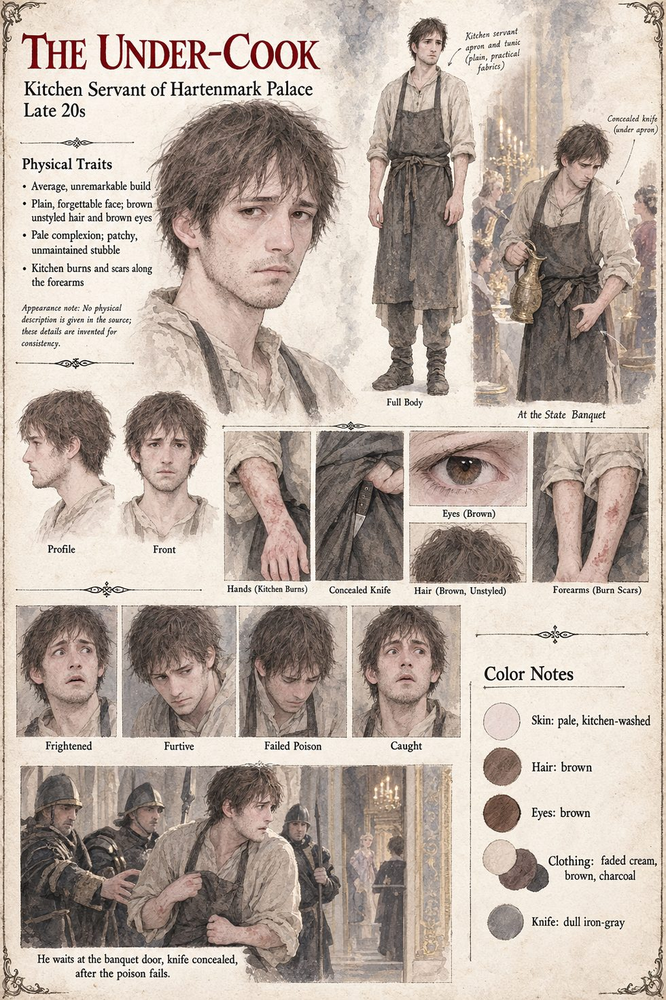

The Under-Cook
Kitchen servant at Hartenmark's palace · bribed, frightened and, once caught, willing to talk · late twenties by his sheet
Somebody's under-cook: bribed, frightened and, once caught, entirely willing to name an intermediary who can be traced, by the same patient, unglamorous work Hildegund has spent nine years learning to do herself, precisely as far as the border and not one step further. He stands at the northern door of the spring banquet for the better part of an hour, not moving, not speaking and never letting the door itself out of arm's reach, a man she has registered only the way a person half-hears a clock; when she walks to the window rather than the door, he would have finished, by his own later and extensively documented confession, with a knife whatever the wine failed to finish first. Reinolt chooses not to tell her so that night, judging it something she does not need to carry on top of everything else. At the room's edge a serving girl turns away with an empty tray and an expression arranged to look like nothing at all; the manuscript does not say who she is.
The manuscript describes him only by his job and its outcome. The sheet's late twenties, unstyled brown hair and brown eyes, patchy stubble, kitchen apron over a plain tunic, burn scars on the forearms and a knife under the apron are its own.